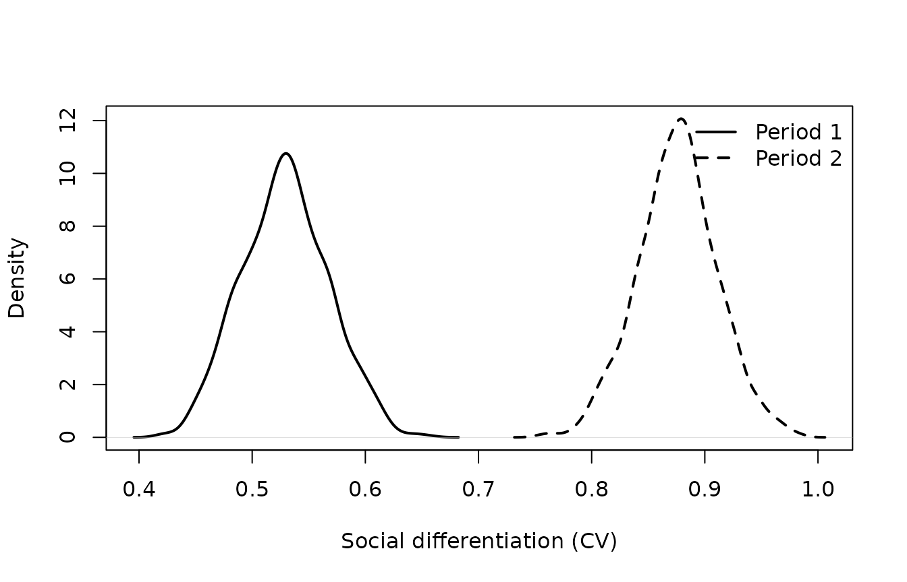
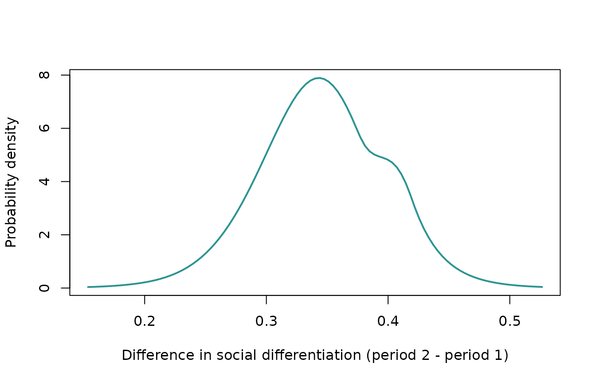
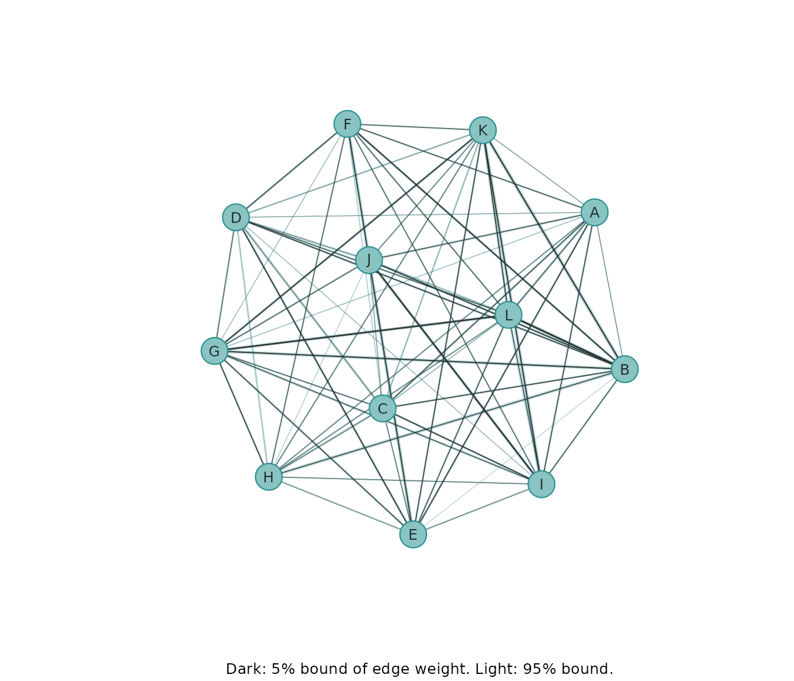
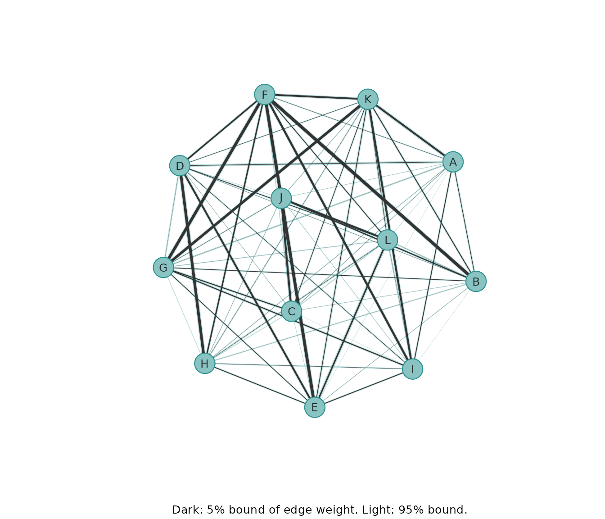

This article shows how to compare two or more networks, such as networks from two seasons, two study periods or two groups. Each network is estimated with its own edge model, and the comparison uses samples (posterior draws) from those models, so the uncertainty in each network is carried into the comparison.
It assumes familiarity with fitting edge models
(vignette("getting_started")), network metrics
(vignette("network_metrics")) and bison_brm()
(vignette("bison_brms")).
Simulated data
We simulate observations of the same 12 individuals in two periods. In each period, the edge weight of each dyad is drawn on the logit (log-odds) scale from a normal distribution with mean -1.5. The standard deviation is 0.5 in the first period and 1.5 in the second, so relationships vary more in strength in the second period (higher social differentiation). Each dyad is observed for between 10 and 40 sampling periods, and the data are aggregated to one row per dyad.
simulate_period <- function(edge_sd, num_nodes = 12) {
nodes <- LETTERS[1:num_nodes]
dyads <- t(combn(num_nodes, 2))
logit_weight <- rnorm(nrow(dyads), mean = -1.5, sd = edge_sd)
effort <- sample(10:40, nrow(dyads), replace = TRUE)
data.frame(
node_1_id = factor(nodes[dyads[, 1]], levels = nodes),
node_2_id = factor(nodes[dyads[, 2]], levels = nodes),
event = rbinom(nrow(dyads), effort, plogis(logit_weight)),
effort = effort
)
}
df_1 <- simulate_period(edge_sd = 0.5)
df_2 <- simulate_period(edge_sd = 1.5)
head(df_1)
#> node_1_id node_2_id event effort
#> 1 A B 4 35
#> 2 A C 6 24
#> 3 A D 3 35
#> 4 A E 10 38
#> 5 A F 7 33
#> 6 A G 1 19Fitting the edge models
An edge model is fitted to each dataset separately. There are no observation-level effects, so the conjugate binary model can be used. Conjugate models calculate the posterior directly, which is fast, but they cannot include extra effects:
priors <- get_default_priors("binary_conjugate")
fit_1 <- bison_model(
(event | effort) ~ dyad(node_1_id, node_2_id),
data = df_1,
model_type = "binary_conjugate",
priors = priors
)
fit_2 <- bison_model(
(event | effort) ~ dyad(node_1_id, node_2_id),
data = df_2,
model_type = "binary_conjugate",
priors = priors
)The models should be checked in the usual way before they are
compared (see vignette("getting_started")).
Comparing global metrics directly
The simplest comparison is to calculate the posterior distribution of
a metric for each network and compare the two. Here we use the
coefficient of variation of edge weights (global_cv), a
measure of social differentiation:
cv_1 <- extract_metric(fit_1, "global_cv")
cv_2 <- extract_metric(fit_2, "global_cv")
rbind(
period_1 = quantile(cv_1, probs = c(0.05, 0.5, 0.95)),
period_2 = quantile(cv_2, probs = c(0.05, 0.5, 0.95))
)
#> 5% 50% 95%
#> period_1 0.4668075 0.5293978 0.5944681
#> period_2 0.8158850 0.8761570 0.9335595
dens_1 <- density(cv_1)
dens_2 <- density(cv_2)
plot(
dens_1, xlim = range(dens_1$x, dens_2$x), ylim = c(0, max(dens_1$y, dens_2$y)),
main = "", xlab = "Social differentiation (CV)", lwd = 2
)
lines(dens_2, lwd = 2, lty = 2)
legend("topright", legend = c("Period 1", "Period 2"), lty = c(1, 2), lwd = 2, bty = "n")
Subtracting one set of samples from the other, draw by draw, gives the posterior distribution of the difference. The two edge models were fitted to independent data, so their posterior draws are independent and can be paired in any order:
cv_diff <- cv_2 - cv_1
quantile(cv_diff, probs = c(0.05, 0.5, 0.95))
#> 5% 50% 95%
#> 0.2593564 0.3463130 0.4344508
mean(cv_diff > 0)
#> [1] 1
plot_metric(cv_diff, "Difference in social differentiation (period 2 - period 1)")
mean(cv_diff > 0) is the posterior probability that
social differentiation is higher in the second period. Here all draws of
the difference are positive, consistent with the simulation.
Pairing draws in any order is only valid for independent models. For
two quantities from the same network, such as the strength of
two nodes, both should be calculated from the same matrix returned by a
single call to extract_metric(), because each call samples
a new set of posterior draws (see
vignette("posterior_networks")).
Global regression
The same comparison can be made with a global regression in
bison_brm(). This needs a list of edge models and a data
frame with one row per network, in the same order as the list. The
bison_network column identifies each network:
df_global <- data.frame(
bison_network = factor(1:2),
period = c("first", "second")
)
fit_global <- bison_brm(
bison(global_cv(bison_network)) ~ period,
list(fit_1, fit_2),
df_global,
num_draws = 5, # Small for demonstration; use 100 or more in practice
refresh = 0,
silent = 2
)
#> Warning: 20 of 2000 (1.0%) transitions ended with a divergence.
#> See https://mc-stan.org/misc/warnings for details.
#> Warning: 231 of 2000 (12.0%) transitions ended with a divergence.
#> See https://mc-stan.org/misc/warnings for details.
#> Warning: 28 of 2000 (1.0%) transitions ended with a divergence.
#> See https://mc-stan.org/misc/warnings for details.
#> Warning: 25 of 2000 (1.0%) transitions ended with a divergence.
#> See https://mc-stan.org/misc/warnings for details.
#> Warning: 90 of 2000 (4.0%) transitions ended with a divergence.
#> See https://mc-stan.org/misc/warnings for details.
summary(fit_global)
#> Warning: There were 394 divergent transitions after warmup. Increasing
#> adapt_delta above 0.8 may help. See
#> http://mc-stan.org/misc/warnings.html#divergent-transitions-after-warmup
#> Family: gaussian
#> Links: mu = identity
#> Formula: bison_global_cv ~ period
#> Data: structure(list(data = structure(list(bison_network (Number of observations: 2)
#> Draws: 10 chains, each with iter = 2000; warmup = 1000; thin = 1;
#> total post-warmup draws = 10000
#>
#> Regression Coefficients:
#> Estimate Est.Error l-95% CI u-95% CI
#> Intercept 0.45 2.52 -4.91 5.61
#> periodsecond 0.46 4.29 -8.04 9.61
#>
#> Further Distributional Parameters:
#> Estimate Est.Error l-95% CI u-95% CI
#> sigma 2.26 2.06 0.27 7.52
#>
#> Draws were sampled using sample(hmc). Overall Rhat and ESS estimates
#> are not informative for brm_multiple models and are hence not displayed.
#> Please see ?brm_multiple for how to assess convergence of such models.With two networks the regression has only two observations, which is
too few to estimate an intercept, a coefficient and a residual standard
deviation reliably. This shows in the very wide credible interval (the
range that contains the coefficient with high posterior probability) for
periodsecond, which is much wider than the interval for the
difference calculated directly above, and in the divergent transition
warnings. Global regressions are more useful when there are many
networks, for example one per group or one per time window, and other
variables to include. With only two or three networks, the direct
comparison of posterior distributions is usually more informative.
Comparing edges present in both networks
Edge weights can be compared across networks with a dyadic
regression. A list of edge models is given with a matching list of data
frames, one row per dyad. Each data frame can only contain dyads that
are in its edge model, so to compare the edges present in both networks,
both data frames should contain only those dyads. Here the same
individuals were observed in both periods, so every dyad appears in
both. The (1 | mm(node_1_id, node_2_id)) term is a
multi-membership random effect, which estimates an effect for each node
that applies to every dyad the node is part of, because edges that share
a node are not independent:
df_dyadic_1 <- df_1[, c("node_1_id", "node_2_id")]
df_dyadic_2 <- df_2[, c("node_1_id", "node_2_id")]
fit_edges <- bison_brm(
bison(edge_weight(node_1_id, node_2_id)) ~ bison_network + (1 | mm(node_1_id, node_2_id)),
list(fit_1, fit_2),
list(df_dyadic_1, df_dyadic_2),
num_draws = 5, # Small for demonstration; use 100 or more in practice
refresh = 0,
silent = 2
)
#> Warning: 3 of 2000 (0.0%) transitions ended with a divergence.
#> See https://mc-stan.org/misc/warnings for details.
#> Warning: 1 of 2000 (0.0%) transitions ended with a divergence.
#> See https://mc-stan.org/misc/warnings for details.
#>
#> Warning: 1 of 2000 (0.0%) transitions ended with a divergence.
#> See https://mc-stan.org/misc/warnings for details.
summary(fit_edges)
#> Warning: There were 5 divergent transitions after warmup. Increasing
#> adapt_delta above 0.8 may help. See
#> http://mc-stan.org/misc/warnings.html#divergent-transitions-after-warmup
#> Family: gaussian
#> Links: mu = identity
#> Formula: bison_edge_weight ~ bison_network + (1 | mm(node_1_id, node_2_id))
#> Data: structure(list(data = structure(list(node_1_id = s (Number of observations: 132)
#> Draws: 10 chains, each with iter = 2000; warmup = 1000; thin = 1;
#> total post-warmup draws = 10000
#>
#> Multilevel Hyperparameters:
#> ~mmnode_1_idnode_2_id (Number of levels: 12)
#> Estimate Est.Error l-95% CI u-95% CI
#> sd(Intercept) 0.49 0.29 0.04 1.12
#>
#> Regression Coefficients:
#> Estimate Est.Error l-95% CI u-95% CI
#> Intercept -1.42 0.24 -1.92 -0.94
#> bison_network2 -0.09 0.24 -0.57 0.38
#>
#> Further Distributional Parameters:
#> Estimate Est.Error l-95% CI u-95% CI
#> sigma 1.31 0.12 1.08 1.55
#>
#> Draws were sampled using sample(hmc). Overall Rhat and ESS estimates
#> are not informative for brm_multiple models and are hence not displayed.
#> Please see ?brm_multiple for how to assess convergence of such models.Edge weights in bison_brm() are on the logit scale for
binary models. The bison_network2 coefficient is the
difference in mean logit edge weight between the second network and the
first. Its credible interval includes zero, which is consistent with the
simulation: the mean edge weight on the logit scale was the same in both
periods, and only the spread differed. Comparing means does not detect a
difference in spread, so the metric or model should be chosen to match
the question.
If the edge weights of the same dyad are expected to be correlated across networks, a dyad-level random effect (which estimates a separate effect for each dyad, shared across networks) can also be added, using a column that identifies each dyad.
Plotting networks with the same layout
plot_network() chooses a new layout each time it is
called, which makes networks hard to compare visually. It returns the
layout it used, which can be passed to later plots:
layout <- plot_network(fit_1, lwd = 5)
plot_network(fit_2, lwd = 5, layout = layout)
The layout is a matrix of node coordinates in the order of the nodes in the model, so this only works when the networks contain the same nodes in the same order. Here both datasets use the same factor levels for the node columns. For networks with different individuals, give both datasets the same set of factor levels before fitting the edge models.